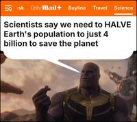

0

A Russia-linked group tracked as Midnight Blizzard has compromised hotel and conference Wi-Fi portals worldwide, redirecting guests to phishing pages and fake software updates that steal credentials, session tokens, and other sensitive data. Microsoft says the campaign, dubbed CaptiveCrunch, "targets traveling employees generally rather than a particular sector," reports iTNews. From the report: Midnight Blizzard, tracked internally by Microsoft under its earlier codename NOBELIUM, is attributed by the US and UK governments to Russia's SVR (Sluzhba Vneshney Razvedki) foreign intelligence service. Microsoft's technical analysis said compromises occurred in "several countries" without naming them, and it did not give a total number of affected venues, organisations or individuals.
A related investigation published earlier in July by security firm ReliaQuest, and which Microsoft cited in its report, found compromised captive portal gateways across multiple United States cities as well as in India and Saudi Arabia, mostly at hotels. ReliaQuest said the traffic it observed came from organizations across financial services, professional services, legal, health care, energy and retail, suggesting the campaign targets traveling employees generally rather than a particular sector.
[...] Where attackers gained a foothold, Microsoft said they deployed two main tools: CornFlake, a Windows remote access trojan (RAT) written in Go capable of keylogging, screenshot and webcam capture, audio surveillance and credential and session token theft. They would also drop ChocoShell, an in-memory PowerShell infostealer targeting browser cookies, saved passwords, Microsoft 365 single sign-on (SSO) tokens and wi-fi credentials. Microsoft also said it has seen indications the attackers might be targeting Android devices with similar prompts urging victims to download and install an APK file.
Read more of this story at Slashdot.
An anonymous reader quotes a report from Forbes: The cost of producing new results on ten longstanding mathematical problems just fell to $2,000, according to OpenAI, which says its Astra model generated machine-checkable proofs for questions that had resisted human progress for decades. OpenAI published the work on August 1 and used it to give its next major model family a name: Astra. The results run across group theory, high-dimensional geometry, coding theory, quantum complexity, lattice cryptography and extremal combinatorics. They arrived as a 249-page manuscript collection and, alongside it, something the field has not seen attached to an AI claim before at this scale: a machine-checkable certificate for every single result.
The problems were not textbook exercises dressed up as discoveries. Each had been open for at least ten years, most of them far longer, and several sit at the center of their subfields:
- A construction establishing the existence of non-sofic groups, a question that has occupied group theorists for years.
- A disproof of Connes's rigidity conjecture, a long-standing problem in the theory of von Neumann algebras.
- An improvement to the general upper bound on sphere-packing density in high dimensions, a bound that had stood since 1978.
- Three problems come from the catalogue of open questions left behind by Paul Erdos. The announcement follows another result from May, when OpenAI used a similar reasoning model to produce an original mathematical proof disproving a famous unsolved conjecture in geometry, which was first posed by Paul Erdos in 1946.
Read more of this story at Slashdot.
An anonymous reader quotes a report from Ars Technica: Earlier this summer, nearly 160,000 applicants took the entrance exam for UNAM, Mexico's largest university. For the first time, they did it completely remotely, using a "lockdown" browser and AI-powered webcam proctoring software, over several weeks from late May through early June. It was a disaster. When exam results came in, they bore little resemblance to past results, especially at the top. Between 2021 and 2025, 3.5 percent of test takers scored 100 or more on the 120-question UNAM test. This year, 16.3 percent did so. The story was even worse at the highest of the high end. Between 2021 and 2025, 0.9 percent of test takers scored 110 or more; this year, 5.5 percent did so.
The surge in top scores led to accusations of widespread cheating, and UNAM appointed a commission of experts to investigate the situation. The group was given the unwieldy name "la Comision Tecnica de Personas Expertas para la Revision del Proceso de Seleccion de Ingreso a Licenciatura para el Circlo Escolar 2026-2027/1," and it has just submitted its recommendations. The commission believes that the best path forward, given all the concerns, is to administer a "control exam" -- that is, applicants will have to sit for another test, and they will do so in person.
This control exam will apply not only to those who secured a spot at UNAM based on this year's test but also to everyone who would have been admitted based on minimum successful scores in their program of study since 2021. About 58,000 people could be affected, and places at UNAM will now depend on the results of the new test. (Details on the control exam should appear soon; classes are currently scheduled to begin on August 10, so everything will have to move quickly unless the school decides to delay classes.) According to Gaceta UNAM, the school's official news publication, the university rector has apologized to honest applicants, since they will now have to prepare for and take the test again despite doing nothing wrong. Still, the control exam is "necessary to give certainty and guarantee equity in access," the rector added.
Read more of this story at Slashdot.
Apple says its lower-cost MacBook Neo is beginning to displace Windows laptops and Chromebooks in K-12 schools, with several districts purchasing thousands of units. According to the company's latest earnings call, nearly half of the large MacBook Neo purchases made by U.S. educational institutions last quarter reportedly replaced competing platforms. 9to5Mac reports: Apple's commentary highlighted some large district deployments moving to Neo Pinellas County Schools, one of the largest districts in Florida, which is moving its 25k students off Windows and onto MacBook Neo across its 18 high schools. In Washington, Peninsula School District 401 moved over its 8,000 students from Chromebooks to MacBook Neo. Midwest City-Del City School District in Oklahoma purchased more than 6,000 MacBook Neos to become an all-Apple district for students.
Read more of this story at Slashdot.
theodp writes: During Microsoft's 2026Q4 earnings call, CEO Microsoft Satya Nadella took time to tout a dashboard he personally created using AI from a Morgan Stanley analyst's PDF research report, which suggested a rosy payback for the so-called MAG7's ('Magnificent 7' companies) massive capital expenditures on AI (to which Nadella later added a "not financial advice" disclaimer). "It would be fun for you, Adam. I think one of your colleagues put out an ROIC [Return on Invested Capital] document. I took that document to Copilot, which is a PDF, and I said, 'Build me a new Power BI dashboard, essentially.' But here is the thing. It built a rich semantic model that went into my Fabric with OneLake that brought all the data in from the external sources. In fact, it was current with all the SEC filings of all the MAG7. And then on top of that, the repo itself is in GitHub, but the artifact is sitting in my Copilot as a site. That, to me, is a classic example of an enterprise-wide workflow. I, as a knowledge worker, could go create a dashboard. The data engineer can go to Fabric and find the artifact. The professional developer can go to the repo and find it in GitHub. And by the way, it's all registered with Agent 365. That's a little bit of what Amy is describing as the coming together of a new way to work, even while at the same time, bringing IT, security and manageability of it."
After Nadella's show-and-tell drew an underwhelming response during the call ("That's very helpful. Thank you." said the Morgan Stanley analyst whose team's work Nadella scraped with AI), Nadella turned to social media with posts on LinkedIn (12M followers) and Twitter/X (8M followers) to make the case for why his DIY project was such a brilliant demonstration of how AI enables governance, controls, security, development, testing, deployment, maintenance, data analysis/modeling, visualization, usability, and value. "Some more detail on the ROIC Intelligence App I built yesterday and mentioned on today's earnings call," Nadella wrote on LinkedIn. "I took the PDF that Brian Nowak at Morgan Stanley put together for Hyperscale ROIC this week and used Copilot code (coming in our new superapp) with a single prompt + skill (/drill-me) to create the plan, then used autopilot in auto to create the full app (with history, lookups, scenarios, what-ifs, etc). And /rubber-duck to test. And the best part is that all the artifacts are in my enterprise environment. My app is in Copilot, my code is in GitHub Enterprise; all my data pipelines/lake/semantic models are in Fabric. And everything is under Agent 365 IT/Sec/FinOps control! So this is not about Tokenmaxxing or vibe coding. Every step of the way the rails are engineered to create value, making everything a long-term reusable asset, with governance/security, and cost controls. This is the full system to drive business value. Disclosures: This is all pulled from public sources, and for illustrative purposes only...not financial advice! :) Here is the app and architecture..."
Not unexpectedly, the accompanying screenshot of a splash page for the BI app and a buzzword-laden complicated architecture diagram drew universal praise from LinkedIn fans, but also a few barbs from less-than-impressed commenters on Nadella's Twitter/X post, some of whom suggested Nadella's project might even represent a jump-the-shark moment for AI mania. "That he doesn't see whats wrong with saying 'My app is in Copilot, my code is in GitHub Enterprise; all my data pipelines/lake/semantic models are in Fabric' is exactly why MS is failing at AI,'" replied @PassingPixels on X/Twitter. "Dude is having to run 5 different systems to emulate babies first vibe code." @zigmund_ignatov added, "Why do we call glorified slide show an app?" @Mathupiriyan quipped, "Looks like Copilot just turned a PDF into a profit crystal ball." Unimpressed, @Markusndnb remarked, "So you created a web page using tons of proprietary MS tools." And @FishyAccounting called on Nadella to show-his-work, saying "Post the prompt or it didn't happen." (btw, Microsoft President Brad Smith similarly declined to provide the prompt for his own self-described amazing AI DIY reporting project that he touted at Microsoft's Shareholder Meeting last December).
So, does Nadella's self-promoted AI reworking of someone else's PDF research report strike you as an amazing example of everything that's good about AI, or does it conjure up memories of The Emperor's New Clothes?
Read more of this story at Slashdot.
Apple's practice of mixing employees' work files with personal iCloud accounts reportedly left some former staff with continued access to confidential documents, messages, and even new updates after leaving the company. "The former employees said many Apple files they had been shared on over their careers at the company -- including planning documents for product launch events -- continued to sync to their personal devices through the iCloud storage service after they left Apple," reports The Information. "In some cases, they even received notifications about fresh updates to the documents. Some former employees said they were petrified to delete the files for fear that doing so would attract Apple's attention." MacRumors reports: Apple files get mixed in with employees' accounts because the company encourages them to use their personal Apple Accounts with their work iCloud account. Employees are given a 2TB iCloud plan and are able to merge the storage with their existing Apple Account or create a new account. Since only one primary account can be signed in at a time, most opt to use their existing account to avoid having to carry two iPhones. Apple has a managed folder for workplace files that it revokes access to when an employee leaves, but some internal documents aren't saved there automatically and shared files end up mixed in with personal content. Employees can also retain access to iMessage chats and files shared via the Messages app.
Lingering access to Apple systems is central to Apple's lawsuit against OpenAI. In its filing, Apple alleged that former employee Chang Liu breached Apple's systems using a "rare, previously unknown authentication bug" to download files while he was working at OpenAI. Apple told The Information that the OpenAI lawsuit is unrelated to any files left available on iCloud and that it does not pursue legal claims against former employees who accidentally have Apple documents in their personal iCloud accounts. "This case is about OpenAI employees wrongfully taking Apple's secret and confidential information regarding our unreleased technologies, processes, and products. Nothing in the filing relates to documents shared by, or stored in, iCloud."
Read more of this story at Slashdot.
An anonymous reader quotes a report from TechCrunch: Several popular Samsung smart TV apps contain code that share the owner's internet connection with strangers, potentially putting millions of Samsung smart TVs at risk of hijacking, according to new security research published on Monday. Some of these apps claim to have been installed on hundreds of millions of smart TVs in people's homes, per the app developers. At least one of the smart TV apps was a simple Pac-Man game that Samsung had endorsed and prominently featured in its "Editor's Choice" section on customers' TV screens. These apps contain software that funnels outsiders' web traffic through ordinary home and office internet connections, known as residential proxy networks (or "resproxies"), which are increasingly being linked to cybercrime. When opened, apps with resproxy code can turn the smart TV into an always-on tunnel for outsiders to funnel their web traffic through, known as an exit node -- even when the app is no longer open.
The security research by Norwegian cybersecurity company Mnemonic describes a perfect storm of problems that allows low-quality apps to proliferate across Samsung's app store, containing code that puts users at risk of having their internet connections tapped by a rogue app. Many of these apps are bare-bone shells, made from only a few lines of code, and are designed solely to load content from another website, such as a game. While such smart TV apps load content from another server, any review of these apps sees only the few lines of code within, and not necessarily the content itself. "What was reviewed is not necessarily what is running," wrote Harrison Sand, an offensive security consultant at Mnemonic.
After TechCrunch contacted Samsung with a request for comment about the research, the electronics giant said in an emailed statement that it was banning apps that share their users' internet connections, and will remove apps that contain the functionality. "We have already restricted new app registrations that incorporate such proxy functionalities on our Smart TV platform," said a Samsung spokesperson. "We are currently implementing strict platform-wide developer policies explicitly banning residential proxy SDKs, and we are working to identify and remove all apps currently available in our store that contain these components." LG also recently announced plans to suspend apps containing ResProxy software after a security firm found that roughly 42% of apps in its TV app store allowed unknown third parties to route internet traffic through users' televisions without their knowledge.
Read more of this story at Slashdot.
Reddit CEO Steve Huffman criticized Google's AI Overviews for summarizing publishers' content without delivering the traffic benefits of traditional search, arguing that users increasingly value Reddit's human perspectives and firsthand experiences. Ars Technica reports: First, there was a letter to investors (PDF), wherein Huffman spun his narrative about Reddit's value proposition and general strategic direction amid the proliferation of AI tools. He wrote: "As the internet becomes flooded with synthetic content, people are craving real human perspective. We are the antidote to an automated web. AI compresses the internet into summaries. Reddit delivers the opposite: deep discussions, passionate debates, and lived experiences. People don't want a summary of Reddit; they want Reddit."
The letter also said: "As AI makes information more abundant, the challenge is no longer finding content -- it's finding context, personal opinion, and first-hand accounts. Everything online feels flat, polished, generated, or sponsored, so consumers are overwhelmed and increasingly skeptical. We've never had more information, but we've never trusted it less."
And then, in comments around the earnings report, he added: "What we see is, 10 blue links has driven tremendous value and growth to the broader ecosystem... from where we sit, AI Overviews has yet to make a similar level of positive impact, and I think that's consistent across the broader landscape, right? As businesses, publishers, retailers, we're still looking for that win-win." Reddit shares nevertheless fell more than 20 percent as investors worried that unstable Google referrals could undermine its growth, even after a strong earnings report.
Read more of this story at Slashdot.
"AI's decimation of call center jobs has begun," reports Bloomberg:
Companies including the Commonwealth Bank of Australia, Microsoft Corp., Uber Technologies Inc. and Hyatt Hotels Corp. are using automated chat and phone systems to handle work that previously required humans. In some cases, they've already wiped out sizable chunks of their customer service operations, together representing thousands of workers.
The specter of automation has long loomed over the call center industry, which employs millions worldwide from the U,S, to India to the Philippines. But until recently, generative artificial intelligence wasn't good enough to move the needle. Now, AI advancements — and pressure on executives to show they're embracing the new technology — have prompted corporations to deploy the tools more widely. Customer service employment in the U.S. is declining and will likely continue to do so as more tasks are automated, Forrester analyst Kate Leggett wrote in a report earlier this year. While it's impossible to determine the future job losses, she estimated that almost half of customer service roles will be affected by 2030.
Globally, the steepest job cuts are expected to hit countries like the Philippines, where many Western companies have outsourced their most easily automated work. Salespeople at multiple tech companies told Bloomberg that they routinely pitch call center AI tools as a way of lowering labor costs, undercutting a common industry claim that AI is primarily a way to help workers become more productive rather than kill their jobs... Commonwealth Bank of Australia, the nation's largest lender, has shed hundreds of workers from its chat support line as it wove AI into the system, according to people familiar with the work. This amounted to tens of millions of dollars in savings per year, one of the people said...
Microsoft is both one of the largest vendors and adopters of customer service automation tools. This has helped the software giant trim its customer service workforce — a mix of contractors and full-time staff — from about 50,000 to 40,000 in recent years, according to a person familiar with the operations. "If something happened with little Johnny's Xbox in the middle of the night, we can now solve that with AI," Judson Althoff, who runs Microsoft's sales and service operations, said in an interview. Althoff said in April that AI is saving the company about $750 million per year in customer service costs. More complex problems still require human support, but the company is constantly expanding what can be fixed automatically, he said in the interview.
Two examples from the article:
Last year Hyatt fired 30% of its in-house customer support staff for the Americas, according the hotel-industry news site Hotel Dive.
Last week Bloomberg reported Uber had cut 10% of its customer service jobs as part of effort to "embrace artificial intelligence," according to the article. "Today, Uber pushes users to submit support requests through their apps, where they're met with an AI chatbot."
Read more of this story at Slashdot.
Longtime Slashdot reader schwit1 shares a report from Behind the Black: In a new bid to get the Thirty Meter Telescope (TMT) to move from Hawaii, which has blocked its construction for more than a decade, the Spanish government has put together a $1.14 billion package that would not only pay for construction on the Canary Islands, but would finance an additional half century of operations. Tech Times provides some additional details: The package is conditional on the TMT International Observatory formally choosing La Palma as its construction site. The financing architecture has three pillars and two additional contingent instruments. The first pillar is 400 million euros (approximately $456 million USD) from Spain's Ministry of Science, Innovation and Universities, routed through the Centre for Technological Development and Innovation (CDTI). This figure was first pledged a year ago in July 2025 as Spain's initial bid.
The second pillar is a 300 million-euro (approximately $342 million USD) loan from the EIB [European Investment Bank] itself -- subject to satisfactory completion of the bank's technical, financial, and legal due diligence and approval by its governing bodies.
The third is a potential 300 million-euro (approximately $342 million USD) participation from the Instituto de Credito Oficial (ICO), Spain's state development finance institution, evaluated under equivalent conditions to the EIB loan but subject to its own separate analysis. Spain's export credit agency, Cesce, may also provide coverage instruments, and the EIB has left open the possibility of expanding its support through intermediated financing mechanisms or guarantees.
Read more of this story at Slashdot.
Microsoft reportedly plans to let developers bring Xbox 360 games to PC and next-generation Xbox devices, with a gradual rollout expected between 2027 and 2028. A separate disc-to-digital program would also give players transferable digital licenses tied to their physical Xbox discs, preserving the ability to resell or trade them. The Verge reports: With 360 games, developers can opt into making them backward compatible, and they will have control over things like a game's price and if it's available on Game Pass. The feature is expected to have a "gradual" rollout between 2027 and 2028 "across next-gen devices." The "full launch" of original Xbox games on PC is also set for October 2026; the initial program announced in July included just four games.
The document also includes details about a way for players to get a digital version of a game that they already own on a physical disc, which The Verge's Tom Warren reported on in July. The document says that if a player puts an Xbox One or Series game on disc into an Xbox One or Series X console with a disc drive, they'll be granted a digital license that's bound to "that disc and the player's account." The license will stay with a player across Xbox devices, but if the disc "changes hands," the license will transfer to the new person. That should mean that gamers can still trade and sell discs; once the original owner of a disc does so, they can't play the digital version they got from that disc anymore.
According to the document, a public beta for the disc-to-digital program was set for July with general availability set for August. We understand Microsoft had originally planned to test its disc-to-digital program with Xbox Insiders in July, but the beta was delayed. It's unclear if the timeline of August general availability is still accurate.
Read more of this story at Slashdot.
South Korea recorded its highest temperature since modern observations began in 1904, with the city of Yangsan reaching 42.5C as temperatures exceeded 40C for a fifth consecutive day. Authorities warned residents to "immediately stop all outdoor activities." The Guardian reports: More than 20 localities in South Korea were under emergency heatwave alerts on Sunday -- a new warning category introduced this year to better address rising temperatures. An emergency alert is issued when areas experiencing a heatwave are forecast to hit perceived temperatures of 38C or an actual temperature of 39C for the day. Issuing a heat warning, the weather agency urged people to "immediately stop all outdoor activities," adding that "indoor spaces without air conditioning are dangerous."
"Move immediately to a cool place, such as a designated cooling centre or a shaded area, and stay hydrated while resting," it advised. Fearing for those people most vulnerable to heat, the prime minister, Han Seong-sook, ordered local officials to strengthen safety checks on residents and to ensure a stable power and water supply was maintained. [...] Korea Meteorological Administration (KMA) data show the average annual number of heatwave days in the country has more than doubled to 19 in the past five years.
Read more of this story at Slashdot.
An anonymous reader quotes a report from 404 Media: Following 404 Media's reporting that book database company ISBNdb claimed to source printed books to then sell to AI companies for AI training, the company deleted the part of its website offering the service and walked back claims that it would train AI models, and instead called it "a test of market interest."
On July 30, nine days after 404 Media's reporting, ISBNdb added a note to its homepage and an update on its news page about the change. "We've seen the recent coverage about a marketing landing page on our site, and we understand the concern it raised. The facts: ISBNdb has never purchased, scanned, or sold a book -- for AI training or anything else," ISBNdb wrote. "We don't train AI models, and we never have. The page was a test of market interest; no such service was ever brought to life. We've taken the page down. Our job is helping people find books. For more than two decades, ISBNdb has been the card catalog of the book world -- the data behind how bookstores, libraries, and reading apps connect readers with titles. Data about books, not the books themselves. That hasn't changed."
ISBNdb removed the landing page for "Printed Books Sourcing for Your AI LLMs Dataset Needs" on July 28. "It was part of exploring demand, and we've chosen to pivot away from that direction. Our main ISBNdb (book metadata API) services are unaffected and running as usual," the site says. According to 404 Media's previous report, ISBNdb had pitched pre-2022 printed books as premium AI training material because they contained curated human knowledge without contamination from AI-generated text or modern data-poisoning techniques. "The world's best AI training data is sitting on a shelf," the company had argued, while offering discreet bulk book acquisition under NDAs and acknowledging the potential backlash if AI firms were seen destroying millions of books for scanning.
Read more of this story at Slashdot.
Slashdot reader prisoninmate shares this report from 9to5Linux:
Coming ten days after the previous Linux kernel security update, which only fixed 12 vulnerabilities that may lead to a privilege escalation, denial of service, or information leaks, the new Debian 13 Linux kernel security update is a massive one, and it patches no less than 68 security vulnerabilities in the Linux 6.12 LTS kernel.
Debian 13 "Trixie" kernel security update are CVE-2026-64530, a use-after-free in the traffic-control subsystem leading to remote denial-of-service with potential for remote code execution, and CVE-2026-64531 (a.k.a. OVSwrap), a local-root vulnerability in the Open vSwitch datapath leading to local privilege escalation to root...
All Debian 13 "Trixie" users are urged to update their installations to Linux kernel 6.12.100-1 as soon as possible.
Read more of this story at Slashdot.
Even as Hollywood performers protest and Hollywood studios sue "in their war on AI," reports the Los Angeles Times, "the entertainment industry is deepening its dependence on it."
Among hundreds of job postings in late June, more than one in 10 was likely connected to AI. The top studios' public postings suggest they have been recruiting people to build AI tools. They are also recruiting teams to defend their intellectual property against unauthorized AI use. "There are plenty of studios that are hiring [for AI] but never talk about it in public," said Yoland Yan, a co-founder of ComfyUI, a company that helps studios juggle different AI tools. Companies have been hesitant to detail how they use generative AI in film production — partly because they are concerned about consumer and union backlash. Some in Hollywood described AI use as the new cosmetic surgery, where everyone knows it is happening, but few will admit to it...
Although some companies may be shy about sharing their AI plans, big stars who don't have to answer to others have been more open about their embrace of the new technology for storytelling. Rejecting AI is like picking a horse and buggy over a car, said "Star Wars" creator George Lucas. "Artificial intelligence means it's much easier for us to make movies," he told a trade magazine earlier this year. "There's nothing you can do about it. That's progress. It's the future." Some in Hollywood have a softer stance on artificial intelligence, with studios cutting deals with AI companies, and filmmakers like Martin Scorsese backing AI companies. Ben Affleck launched an AI film tech company then sold it to Netflix for half a billion dollars. When launching InterPositive, Affleck said he wanted to keep "storytelling human" by building AI tools that could fix lighting, generate missing shots and other things while "keeping creative decisions in the hands of artists...."
Disney, Netflix and Amazon had job postings that were about using AI on the creative side of the business. Universal, Paramount, Warner Bros. and Sony had job ads suggesting they were also using AI but for marketing, distribution and audience analytics. The postings suggest the Disney, Netflix and Amazon studios are building repeatable AI workflows for visual effects, animation, sound and dubbing. The companies also seem to be building in-house teams to develop custom generative-AI models, while also using third-party software.
None of the jobs advertised were to create AI that wrote scripts or created AI actors.
Ironically, the Times used Claude Code to build a scraper to identify the job postings, their article acknowledges.
Three Disney jobs were for "content security," assessing AI tools and guarding against piracy, watermarking and rights-protection work. But Disney is also hiring PhD-level talent "to study 'computer graphics and AI' for Pixar and Disney films," according to the article, and "people to 'bridge the gap between research and practical studio application.'"
Disney-owned visual effects shops Industrial Light & Magic "was searching for supervisors to 'explore emerging technologies (including AI/Machine Learning)' to develop new production workflows."
Audio post-production unit Skywalker Sound "seemed to be recruiting to build proprietary AI models for soundtracks, voice separation, and voice transfer, the process of taking a speaker's tone and pitch, and applying it to new content."
Amazon "was hiring a principal AI executive to drive AI-tool adoption across production, plus roles in operations automation and LLM content classification."
Read more of this story at Slashdot.
Lily Mae Lazarus / Fortune : HappyRobot, which uses AI to automate freight operator communications, raised a $150M Series C at a $1.2B valuation, after a $44M Series B in September 2025 — Pablo Palafox likes to say his company is “getting started” even as its valuation just crossed ten figures.
Todd Gillespie / Bloomberg : Sources: Polymarket is in early talks with prospective investors to raise ~$1B at a $20B+ valuation, up from $15B in April 2026 and $9B in October 2025 — Polymarket is seeking to raise capital at a valuation of more than $20 billion, months after it closed an earlier round with new investment from hedge fund D.E. Shaw & Co.
Bloomberg : Sources: Anthropic agreed to a $10B deal for computing capacity in Norway from Nvidia-backed AI cloud startup Volta; Volta says the deal runs for six years — Anthropic PBC has struck a $10 billion deal for computing capacity from a months-old infrastructure startup, according to people familiar …
Dina Bass / Bloomberg : AI cloud startup Volta raised $300M co-led by a16z and Altimeter at a $2.4B valuation and says it landed a $10B contract with an unnamed leading AI developer — Volta Infra Holdings Ltd., a new artificial intelligence cloud company, has raised $300 million in venture funding and secured …
Bloomberg : Sources: China's CXMT is set to manufacture small quantities of LPDDR6 smartphone memory by the end of 2026, as it seeks to compete with SK Hynix and Samsung — China's state-backed CXMT Corp. is poised to produce smartphone memory chips that are on par with the industry's most advanced designs …
Alexandra Alper / Reuters : Sources: the FCC is drafting a restriction on US imports of new models of Chinese data center optical transceivers, set to take effect upon publication in 2026 — The Trump administration is drafting a ban on U.S. imports of new models of Chinese data center components …
Emily Steel / New York Times : Uber is defending 4,000+ rider sexual-violence lawsuits by aggressively examining plaintiffs' drinking, clothing, and more, after promising to protect survivors — A 24-year-old woman logged onto a videoconference from her bedroom in Florida on a Friday morning in April 2025 to face a deposition in her lawsuit against Uber.
Bloomberg : In a rare interview, Huawei chip scientist Liao Heng warns Western chip companies will eventually face physical chip limits and talks Huawei's Tau Scaling Law — Huawei Technologies Co.'s top semiconductor scientist warned of the looming physical limits Western chipmaking giants including Nvidia Corp. face …
New York Times : Sources: the US is focused on promoting US AI models to be more competitive, after officials considered taking a more interventionist approach to open source AI — The Trump administration has struggled over how to approach to “open source” models, which are freely available to download and favored by Chinese companies.
Reuters : Bending Spoons agrees to acquire Airtable in an all-cash deal valuing the US software company at $1.285B, set to close by 2026-end, its first post-IPO deal — Bending Spoons (BSP.O) has agreed to buy Airtable in an all-cash deal valuing the U.S. software firm at $1.285 billion …
Nikou Asgari / Financial Times : How Wall Street learned to love the blockchain, as US regulators accept tokenized assets and other tech can offer significant advantages in speed and efficiency — Financial companies hope to modernise markets with the technology but systemic risks remain.
Todd Spangler / Variety : Spotify reports Q2 revenue up 14% YoY to €4.8B, Premium Subscribers up 9% YoY to 300M, MAUs up 12% YoY to 777M, below 778M guidance, and a €545M net income — Music streamer's Q2 2026 subscription revenue increases 15% and ad revenue ticks up 1%
Sankalp Phartiyal / Bloomberg : Source: Apple passed $10B in annual sales in India for the first time in FY 2026, up from $9B in 2024-25 and $6B in 2022-23, as it expands its retail footprint — Apple Inc. exceeded $10 billion in annual sales in India for the first time last fiscal year, underscoring surging demand …
Bloomberg : Sources: Beijing is growing concerned about the cyber capabilities of Mythos and other US-developed frontier AI models and their potential as offensive weapons — China is growing anxious that Anthropic PBC's Mythos could be wielded against the world's second-biggest economy …
Financial Times : Sources and filings: Google assembled a ~$200B financing program for Anthropic, with $150B+ tied to TPUs and involving Broadcom, Blackstone, Apollo, and others — Private credit, chip leases and data centre guarantees underpin a vast new model for AI spending